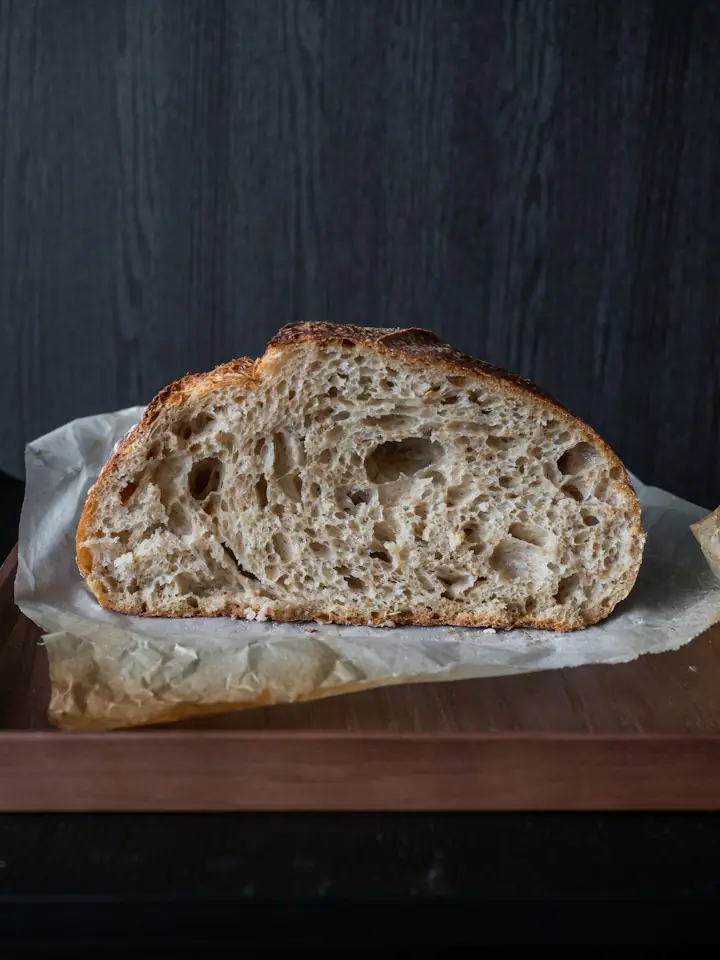
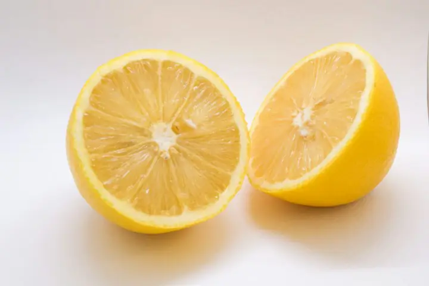
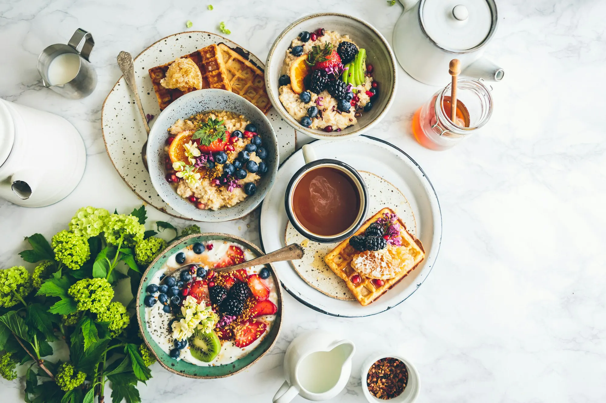

Kilo yönetimi
Aç kalmadan, porsiyon ve öğün düzeniyle kilo vermek ya da vermiş olduğunuz kiloyu korumak için. Duygusal yeme ve gece atıştırmaları da konuştuğumuz konular arasında.
Randevu alİlk görüşmede tahlillerinize bakıyor ve vücut analizi yapıyoruz. Planınız iş saatlerinize ve sevdiğiniz yemeklere göre hazırlanıyor, kontrol görüşmelerinde birlikte güncelleniyor.

12 yıl
klinik beslenme deneyimi
3 uzman
diyetisyen, tek çatı altında
60 dk
ilk görüşme ve vücut analizi
7 gün
içinde ilk kontrol, sonra haftalık takip
Hazır listeler dağıtmıyoruz. Yaşınızı, hareket düzeninizi, tahlil sonuçlarınızı ve mutfağınızda gerçekten ne olduğunu konuşarak başlıyoruz.
Aç kalmadan, porsiyon ve öğün düzeniyle kilo vermek ya da vermiş olduğunuz kiloyu korumak için. Duygusal yeme ve gece atıştırmaları da konuştuğumuz konular arasında.
Randevu al
İnsülin direnci, tip 2 diyabet, PCOS, tiroit hastalıkları ve yüksek kolesterolde hekiminizin tedavisiyle uyumlu, tahlillerinize göre güncellenen bir beslenme programı.
Randevu al
Antrenman saatine göre karbonhidrat ve protein zamanlaması, yarış ve kamp dönemi planları.
Randevu
Trimesterlere göre değişen ihtiyaçlar, bulantı dönemi, kilo takibi ve emzirirken enerji dengesi.
Randevu
Seçici yeme, okul beslenmesi ve büyüme takibi. Görüşmelere aileyle birlikte başlıyoruz.
Randevu
Şehir dışından veya yoğun bir tempodan katılanlar için görüntülü görüşme. Evde ölçüm almayı birlikte öğreniyoruz.
RandevuEylül ve ekim






Plan ilk görüşmede bitmiyor. Bayram sofrası, tatil ya da yoğun bir iş haftası geldiğinde kontrol görüşmesinde birlikte güncelliyoruz.
Sağlık geçmişiniz, kullandığınız ilaçlar, son tahlilleriniz ve üç günlük besin kaydınız üzerinden konuşuyoruz.
Biyoempedans cihazıyla yağ, kas ve su oranınızı ölçüyoruz. Tartıdaki tek bir sayıya bakmıyoruz.
Sevdiğiniz yemekler, mesai saatleriniz ve bütçenizle uyumlu plan e-postanıza gelir.
Kısa kontrol görüşmeleri ve hafta içi mesaj desteğiyle planı gerektiğinde güncelliyoruz.

Yöntem
60 dk ilk görüşme · 48 saat içinde kişisel plan · Haftalık kontrol ve mesaj desteği
Her uzmanın ağırlıklı çalıştığı alan farklı. Randevu alırken konunuzu seçtiğinizde size uygun uzmanlar öne çıkar.

Klinik beslenme · Kurucu
Klinik beslenme alanında yüksek lisans yaptı. On iki yıldır insülin direnci, diyabet ve kilo yönetimi üzerine çalışıyor.
Selin Hanım’dan randevu alSporcu beslenmesi
Amatör ve lisanslı sporcularla çalışıyor. Antrenman programına göre öğün zamanlaması ve vücut kompozisyonu takibi yapıyor.
Emre Bey’den randevu al
Gebelik ve çocuk
Gebelik, emzirme ve çocukluk dönemi beslenmesi üzerine çalışıyor. Seçici yeme sorunu yaşayan çocuklarla aile odaklı görüşmeler yapıyor.
Zeynep Hanım’dan randevu alBu hesaplamalar genel bir fikir verir. Görüşmede aynı değerleri vücut analizi ve tahlillerinizle birlikte yorumluyoruz.
Üç farklı hedef için hazırladığımız örnek haftalar. Porsiyonlar ortalama bir yetişkine göredir; size özel plan görüşmede hazırlanır.
Bu menüler genel bir örnektir; gebelik, kronik hastalık, ilaç kullanımı veya 18 yaş altı gibi durumlarda doğrudan uygulanmamalıdır. Değerler yaklaşıktır.
Çoğu 30 dakikadan kısa sürüyor ve malzemeleri mahalle marketinde bulunuyor. Her tarifte porsiyon başına besin değerleri var.
Görüşme ücretlerini baştan paylaşıyoruz. Online görüşmeler, yüz yüze görüşmelerle aynı içeriktedir.
Sonradan ek ücret çıkmaması için baştan netleştiriyoruz.
Şirket çalışanlarına yönelik seminer ve bireysel görüşme paketleri için ayrıca teklif hazırlıyoruz.
Uzmanların boş saatlerini görüp randevunuzu buradan ayırabilirsiniz. Aynı gün için en erken bir saat sonrasına randevu verilebiliyor.
--:--
Şu an · Türkiye saati
Randevunuzu 24 saat öncesine kadar ücretsiz iptal edebilirsiniz.
Danışanlarımızın en sık sorduğu konuları, güncel bilimsel kaynaklara dayanarak yazıyoruz.
İnsülin direncinde mucize besin yok. Tabak düzeni, lif, protein, öğün sırası ve yemek sonrası yürüyüş gibi kanıta dayalı 7 alışkanlığı uzman diyetisyen anlatıyor.There is no miracle food for insulin resistance. A dietitian explains 7 evidence-based habits: plate balance, fibre, protein, food order and a walk after meals.
Uzm. Dyt. Selin KaracaSelin Karaca, RD, MSc
Klinik beslenme · kurucuClinical nutrition · founder
16:8 aralıklı oruç nedir, çalışmalar ne diyor, kimler uygulamamalı ve oruç penceresi nasıl açılmalı? Diyetisyen gözüyle pratik bir rehber.What is 16:8 intermittent fasting, what does the research say, who should avoid it and how should you break the fast? A practical guide from a dietitian.
“Günde 8 bardak su” kuralı nereden geliyor? Kilonuza, hareketinize ve havaya göre su ihtiyacınızı nasıl hesaplayacağınızı ve yeterli içip içmediğinizi nasıl anlayacağınızı anlatıyoruz.Where does the “8 glasses a day” rule come from? How to work out your water needs from your weight, activity and the weather, and how to tell whether you are drinking enough.
Dyt. Zeynep TunalıZeynep Tunalı, RD
Gebelik ve çocuk beslenmesiPregnancy & child nutrition · İçerik kontrolü: Uzm. Dyt. Selin Karaca · Reviewed by Selin Karaca, RD, MSc
Akdeniz tipi beslenmenin temel ilkeleri, kalp sağlığıyla ilgili kanıtlar ve zeytinyağlılar, bakliyat ve balıkla Türk mutfağına nasıl uyarlanacağı.The core principles of the Mediterranean diet, the evidence on heart health, and how to adapt it with olive-oil dishes, legumes and fish from Turkish cuisine.
Uzm. Dyt. Selin KaracaSelin Karaca, RD, MSc
Klinik beslenme · kurucuClinical nutrition · founder
Günde kilo başına kaç gram protein gerekir? Hareketsiz yetişkinler, sporcular ve yaşlılar için protein ihtiyacı, öğünlere dağılım ve toz protein hakkında bilmeniz gerekenler.How many grams of protein per kilo do you need? Protein needs for inactive adults, athletes and older people, how to spread it across meals, and whether you need protein powder.
İçindekiler listesi, porsiyon tuzağı, şekerin farklı adları, tuz ve yağ değerleri: gıda etiketlerini 5 adımda doğru okumayı öğrenin.Ingredient lists, the portion trap, the many names of sugar, and salt and fat values: learn to read food labels properly in 5 steps.
Dyt. Zeynep TunalıZeynep Tunalı, RD
Gebelik ve çocuk beslenmesiPregnancy & child nutrition · İçerik kontrolü: Uzm. Dyt. Selin Karaca · Reviewed by Selin Karaca, RD, MSc
Cevabını bulamadığınız bir soru mu var? Asistanımıza yazın ya da WhatsApp’tan ulaşın; mesai saatlerinde bir diyetisyen yanıtlıyor.
Yaklaşık 60 dakika sürüyor. Sağlık geçmişinizi, kullandığınız ilaçları, uyku ve hareket düzeninizi konuşuyor; biyoempedans cihazıyla vücut analizi yapıyoruz. Tahlilleriniz varsa birlikte değerlendiriyoruz. Kişisel planınız 48 saat içinde e-postanıza gönderiliyor.
Son 3 ay içindeki kan tahlilleriniz, kullandığınız ilaç ve takviyelerin listesi ve mümkünse üç günlük besin kaydınız yeterli. Vücut analizinin doğru sonuç vermesi için görüşmeden önceki 2 saatte ağır yemek yememenizi, 12 saat içinde yoğun egzersiz yapmamanızı öneriyoruz.
Plan ve takip açısından aynı içeriği sunuyor. Tek fark vücut analizinin yapılamaması; bunun yerine evde bel çevresi, kilo ve fotoğrafla takip yöntemini birlikte kuruyoruz. İstanbul’daysanız üç ayda bir klinikte ölçüm almanızı öneriyoruz.
Randevu saatinden 24 saat öncesine kadar, onay e-postanızdaki referans koduyla bu sayfadaki “Randevu iptali” bölümünden ücretsiz iptal edebilirsiniz. Daha yakın saatlerdeki değişiklikler için lütfen bizi arayın veya WhatsApp’tan yazın.
Hayır. Kilo değişimi hormonlar, uyku, stres, ilaçlar ve başlangıç ağırlığı gibi pek çok şeye bağlı. Sağlıklı bir hız genellikle haftada 0,5–1 kg arasındadır. Bize kesin rakam vaat eden bir programa karşı dikkatli olmanızı öneririz.
Hayır, ilaçlarınızla ilgili kararları yalnızca hekiminiz verir. Beslenme planını hekiminizin tedavisiyle uyumlu hazırlıyor, gerektiğinde sizin onayınızla hekiminizle iletişime geçiyoruz.
2 yaşından itibaren. 12 yaş altındaki çocuklarla görüşmeleri ebeveynle birlikte yapıyoruz; çocuklara kilo odaklı “diyet” vermiyor, ailenin sofra düzeni üzerinden çalışıyoruz.
Hayır. Herhangi bir ürün satışı yapmıyor, marka önermiyoruz. Tahlillerinizde bir eksiklik görülürse takviye kararı için sizi hekiminize yönlendiriyoruz.
Nakit, kredi kartı ve havale ile ödeme alıyoruz; 3 aylık programda kredi kartına 3 taksit yapılabiliyor. Her görüşme için fatura düzenleniyor. Bazı özel sağlık sigortaları diyetisyen görüşmelerini karşılıyor; poliçenizi kontrol etmenizi öneririz.
Bilgileriniz 6698 sayılı KVKK kapsamında yalnızca randevu ve danışmanlık amacıyla işlenir, üçüncü kişilerle paylaşılmaz. Ayrıntılar aydınlatma metnimizde yer alıyor.

Moda Caddesi üzerindeyiz; Kadıköy iskelesinden yaklaşık 10 dakika yürüme mesafesi. Binada asansör var, en yakın otopark 150 metre ileride.
Moda Cad. No: 48, Kat 3, Kadıköy / İstanbul
Kadıköy iskelesi 10 dk · Moda tramvay durağı 3 dk yürüme
| Pazartesi | 09:00 – 20:00 |
|---|---|
| Salı | 09:00 – 20:00 |
| Çarşamba | 09:00 – 20:00 |
| Perşembe | 09:00 – 20:00 |
| Cuma | 09:00 – 20:00 |
| Cumartesi | 10:00 – 15:00 |
| Pazar | Kapalı |